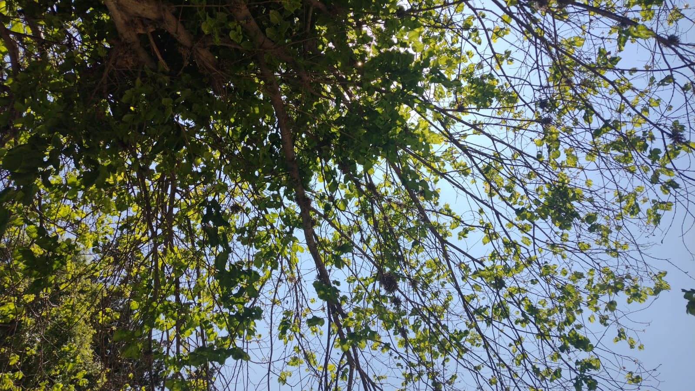

UN POQUITO DE MI
Me llamo Thais Brenda Mamani Condori, tengo 18 años de edad, naci en La Paz - El Alto el 13 de Julio del 2004 en el hospital Corea, tengo una familia conformada por 5 yo, mi mamá (Norah), mi papá (Rogelio), mi hermano menor (Joel), mi hermanita aún mas menor (Luciana). Soy la hermana mayor a lo cual tuve más responsabilidades a lo largo de los años y tuve que descubrir por mi misma sobre las cosas de mi corta vida, como no tuve hermanos mayores nadie me dijo que estaba bien o mal aunque tuve a mis padres, a esa edad no es los mismo ya que no sabia si me iban a comprender o no, se que trataban de entender pero hay cosas que no podia preguntarles, más que todo por que me daba pena la verdad. Al ser la mayor tambien tuve que cuidar de mis menores teniendo que ser un ejemplo para ellos en todo, aunque nadie es perfecto y yo tuve mis errores. Pero eso no importa ahora por que no fueron graves jaja, Me considero una chica que aun no sabe lo que quiere creo que entre a mi carrera mas que todo por que no sabia que hacer y tambien no hay algo en lo que destaque la verdad, tuve 18 años para decidir que hacer con mi vida pero como siempre lo deje para ultimo y tuve que pensar en todas las carreras posibles y en todas las universidades a nivel nacional e internacional (aunque siendo realista no podia a nivel internacional pero la idea era tentadora), mi ultimo año de secundaria podria decir que me puse las pilas y empece a destacar en mi curso, al punto de casi superar a la mejor alumna de mi salon, pero el mes de noviembre, diciembre del 2021 tuve que analizar exactamente que y quien queria ser, Psicologia? me gusta el chisme pero al final la que necesita ir al psicologo soy yo jajaja, tambien quise ser cocinera o más bien estudiar gastronomia, pero era una carrera a la cual muchos no le ven futuro entonces me desanime y nah, astronomia era mi mejor opcion pero de igual forma me desanime, arqueologia si era un sueño desde niña y estaba decidida a cumplirlo y otra ves me desanime, azafata un sueño mio es viajar por todo el mundo y siendo azafata lo haria aunque estuviese de avion en avion igual lo veria por la ventana. Tuve muchos sueños y quise ser muchas cosas pero tenia que ser realista y mirar que carrera beneficiaria mi futuro ya que escojer una carrera que a lo largo no de frutos no era exactamente la idea. Actualmente me decidi por Informatica una carrera que tiene futuro a lo largo ya que todo hoy en dia es tecnologia, programación, aplicaciones, y etc. Entonces fue una buena idea nunca se me paso por la mente ser esto pero vamos bien. Soy alguien muy indecisa respecto a mi persona y mayoria de las veces no se que quiero, el estilo la verdad ni yo se cual es un dia puedo tener el estilo más gotico del mundo y otro puedo estar de rosa, o de forma más elegante. Me gusta variar aunque ya llevo un tiempito en el que mi estilo es el de un vagabundo como diria mi papá jajaj, tengo muchos sueños uno de ellos es salir del pais y conocer el mundo hay tantos paises, tantas cosas que aprender y yo quiero descubrir de todo, mas que todo Paris desde niña fue mi lugar soñado, soy una persona sensible y muchas veces las palabras me afectan demasiado aunque lo digan de broma yo podria tomarmelo muy enserio y caer en una crisis existencial conmigo misma pensando en el por que estoy viva y por que hago todo lo que hago, en fin me gusta complicarme la vida. Fuera de eso soy una persona feliz, amo a mis padres y a mis hermanos y son lo más importante para mi, y en cada decision tengo que pensar primero en ellos luego talves en mi. Creo absolutamente en que el dinero si trae la felicidad, acaso el amor me va a llevar por todo el mundo? no verdad jajaja.
Hobbies
Me gustan muchas cosas por ejemplo:Amo leer!!!
Desde pequeña mi mamá inculco la lectura en mi corta y actual vida, es algo que me atrapo desde el primer momento auqnue a esos años lo maximo que leia eran los cuentos de hadas y etc. Cuando era una niña soñaba con un mundo ideal, pero no todo es un cuento de hadas entonces decidi huir de la realidad en los libros, cada libro es distinto a su manera unos son de accion, de romance, de fantacia hay de todo, eso lo hace mas maravilloso.
Cocinar
Si me gusta y como dije mi sueño era estudiar gastronomia, me gusta en especial la variedad de postres, pasteles, y delicias que se pueden hacer. Hay mucha variedad y yo quiero perfeccionarme en eso.
Las plantas
Ultimadamente me empezo a gustar demasiado las plantas, la naturaleza, flores, arboles, acaso no es bellisima la nataruleza, quiero tener un jardin enorme con distintos tipos de plantas, arboles y muchas flores.

Astronomia
Me encanta el espacio es enorme y me gusta seguir de cerca los temas respecto a todo lo que es el espacio y mas alla, hace un tiempo me intereso demasiado el tema de los agujeros negros me lei el libro de stephen hawking "Agujeros negros" y quede fascinada con cada palabra que leia. El universo es inmenso y solo se descubrio un pequeño porcentaje de lo que existe en el, acaso no es fascinante.Mitos y leyendas
creo en eso y me gusta investigar todo respecto a esos temas.
Viajar
Nunca sali de Bolivia es más tampoco sali de La Paz y talves por esas razones me gustaria conocer tantos lugares en el mundo.